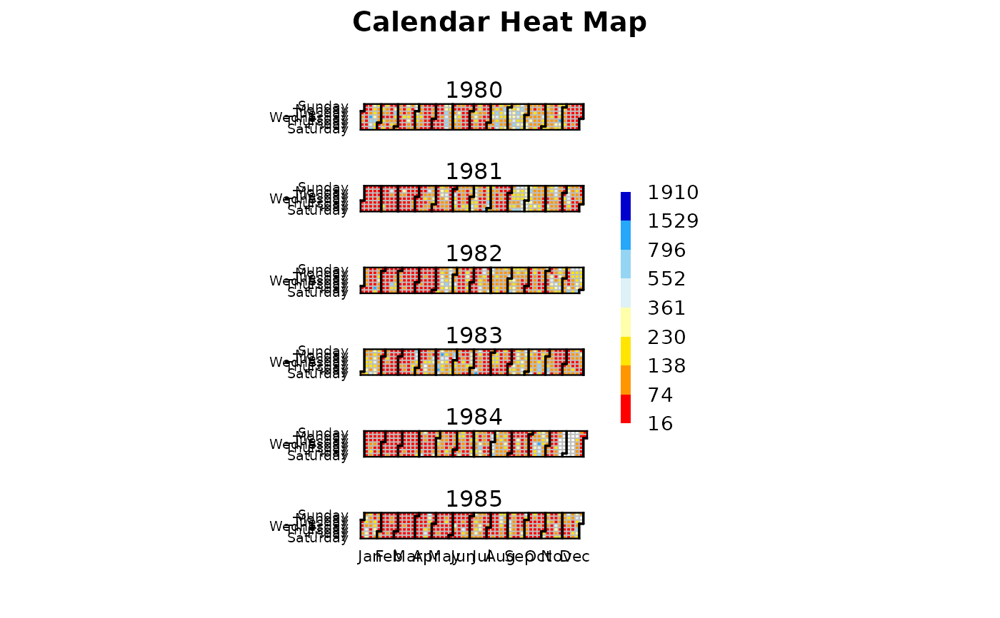

Calendar heatmap
calendarHeatmap.RdFunction to plot a heatmap of a daily zoo object with a calendar shape
Usage
calendarHeatmap(x, ...)
# S3 method for class 'zoo'
calendarHeatmap(x, from, to, date.fmt="%Y-%m-%d",
main="Calendar Heat Map",
col=colorRampPalette(c("red", "orange", "yellow", "white",
"lightblue2", "deepskyblue", "blue3"), space = "Lab")(8),
cuts, cuts.dec=0, cuts.labels,
cuts.style=c("fisher", "equal", "pretty", "fixed", "sd",
"quantile", "kmeans", "bclust", "mzb"),
legend.title="", legend.fontsize=15,
do.png=FALSE, png.fname="mypng.png", png.width=1500,
png.height=900, png.pointsize=12, png.res=90,
do.pdf=FALSE, pdf.fname="mypdf.pdf", pdf.width=11,
pdf.height=8.5, pdf.pointsize=12, ...)Arguments
- x
daily zoo object to be plotted. Its maximum amount of daily data should be less than 6 years or otherwise it will not be plotted.
- from
Character indicating the starting date for subsetting
x. It has to be in the format indicated bydate.fmt.- to
Character indicating the ending date for subsetting
x. It has to be in the format indicated bydate.fmt.- date.fmt
character indicating the format in which the dates are stored in
fromandto, e.g. %Y-%m-%d. See ‘Details’ section instrptime.- main
character, Main chart title.
- col
A color palette, i.e. a vector of n contiguous colors generated by functions like rainbow, heat.colors, topo.colors, bpy.colors or one of your own making, perhaps using
colorRampPalette. If none is provided, a color ramp with 8 colours is created usingcolorRampPalette.- cuts
Numeric, indicating the values used to divide the range of
xin the legend of colours. If not provided, it is automatically selected as a function oflenght(col).- cuts.dec
Number of decimal places used to present the numbers in the legend of colours.
- cuts.labels
Character indicating the label to be used in the colour legend for each one of the values defined by
cuts. If not provided,as.character(cuts)is used.- cuts.style
discarded because takes too much time or not alway provide the required number of classes: "dpih", "headtails", "hclust", "jenks".
- legend.title
text to be displayed above the legend of colours.
- legend.fontsize
size of text (in points) used in the legend of colours.
- do.png
Do you want to write the figure as a .png file? logical, set TRUE to save the image.
- png.fname
character, indicating the name of the file (possibly with a meaninful file extension) that will be used to write the output file.
- png.width
numeric, the width of the device.
- png.height
numeric, the height of the device.
- png.pointsize
integer, the default pointsize of plotted text, interpreted as big points (1/72 inch) at
resppi.- png.res
integer, the nominal resolution in ppi which will be recorded in the bitmap file, if a positive integer. Also used for units other than the default, and to convert points to pixels.
- do.pdf
Do you want to write the figure as a .pdf file? logical, set TRUE to save the image.
- pdf.fname
character, indicating the name of the file (possibly with a significant extension) that will be used to write the output file.
- pdf.width
numeric, the width of the device.
- pdf.height
numeric, the height of the device.
- pdf.pointsize
integer, the default point size to be used. Strictly speaking, in bp, that is 1/72 of an inch, but approximately in points. Defaults to 12.
- ...
further arguments passed to functions or from other methods. Not used yet.
Details
The original function calendarHeat was developed by Paul Bleicher, as an R version of a graphic from http://stat-computing.org/dataexpo/2009/posters/wicklin-allison.pdf (not available any longer).
The original function was made available online in 2009, but then it was removed. Now it is available at https://github.com/tavisrudd/r_users_group_1/blob/master/calendarHeat.R.
The original function has "Copyright 2009 Humedica", but it was distributed under the GPL-2 licence, as well as this new version of the function.
This slighly modified verison of the function is also distributed under the GPL-2 licence, and teh main changes with respect to the original function are:
1) uses a zoo object instead of a numeric and character vector, for values and dates, respectively.
2) it allows a customisation of the mian title of the output figure.
3) it allows a customisation of the color palette.
4) it uses a categorical legend instead of a continuos one.
5) it is named calendarHeatmap instead of calendarHeat.
Author
Mauricio Zambrano-Bigiarini, mzb.devel@gmail.com
Examples
###########
# EXAMPLE 1: basic plotting of a calendar heatmap
###########
# Loading daily streamflow data for Karamet at Gorges.
data(KarameaAtGorgeQts)
x <- KarameaAtGorgeQts
x <- subdaily2daily(x, FUN=mean)
# Temporal subsetting for a amaximum of 6 years
x <- window(x, start="1980-01-01", end="1985-12-31")
# Calendar Heatmap, 8 colours and cuts defined using Fisher method
calendarHeatmap(x)
#> Warning: var has missing values, omitted in finding classes
